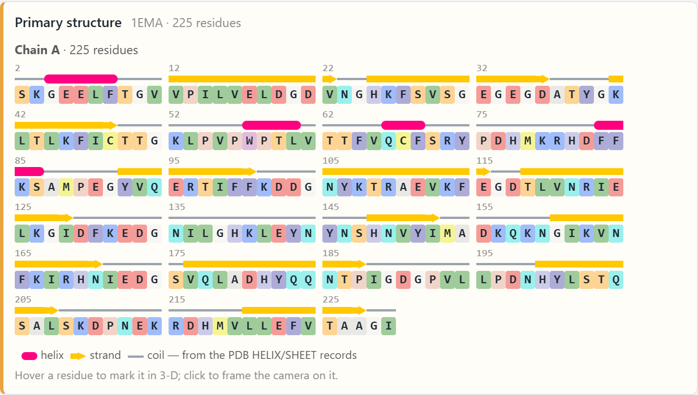
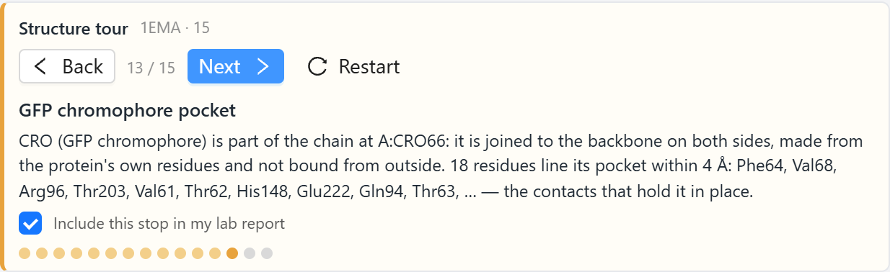
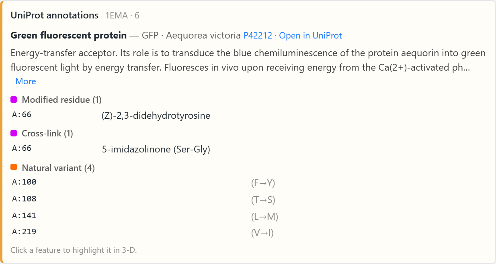
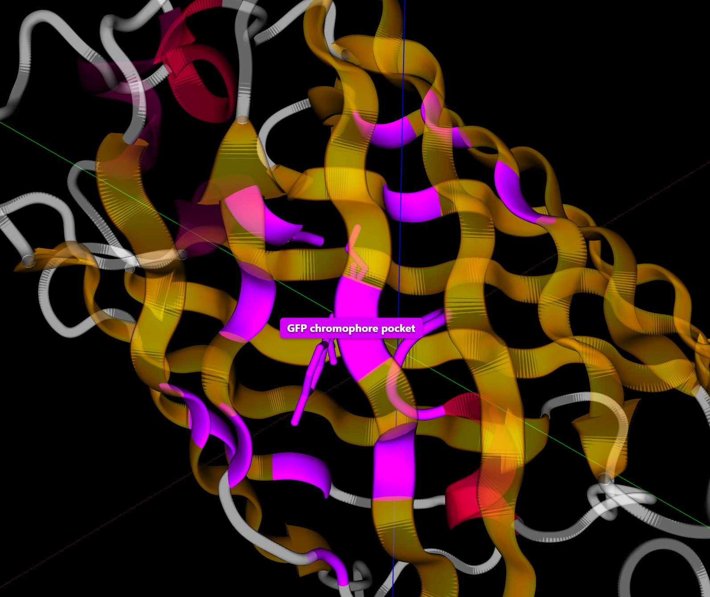
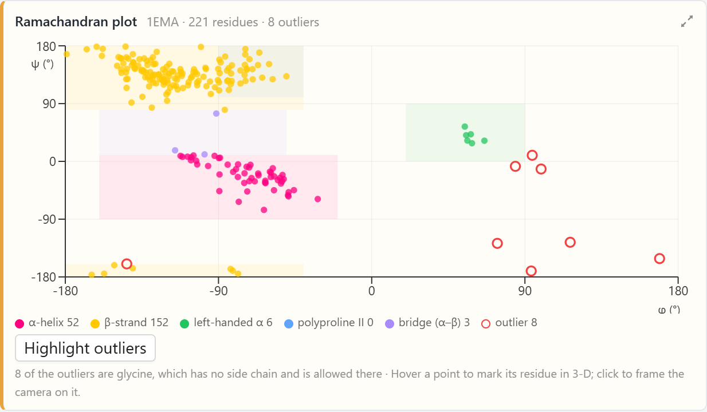
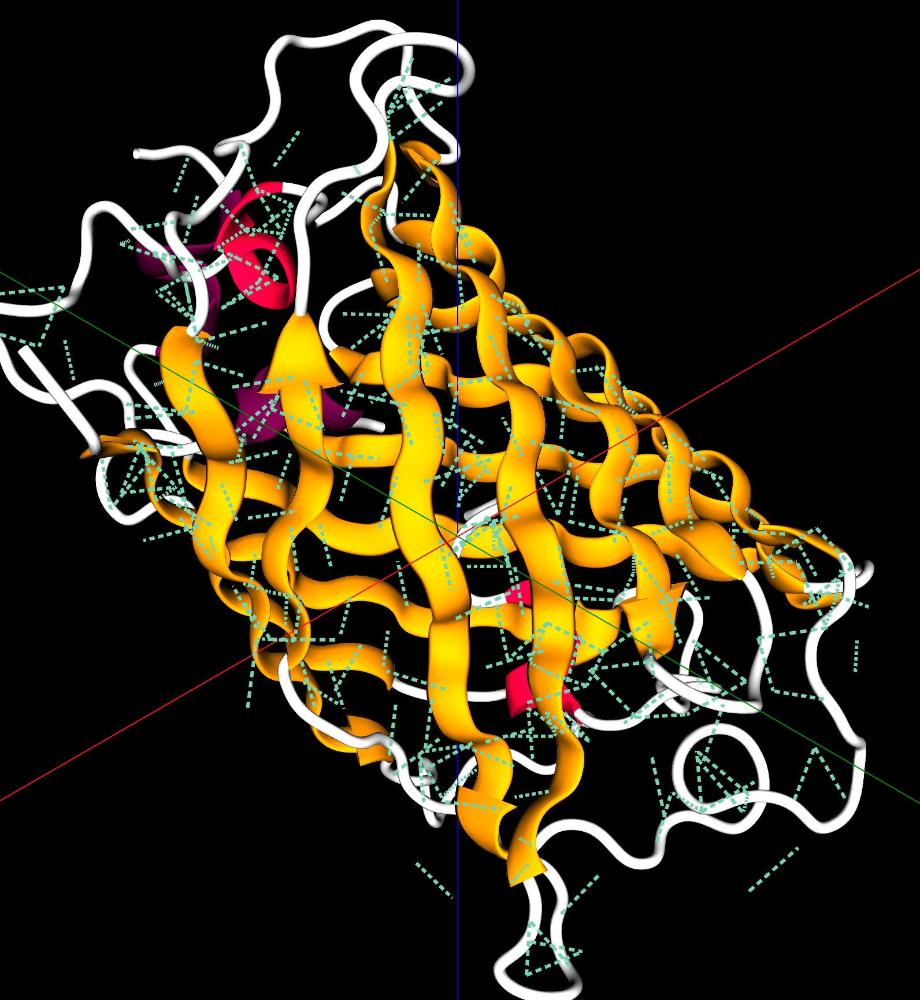

The Chromophore of Green Fluorescent Protein
The structure file of green fluorescent protein skips three residues. An AI agent in the Protein Lab of AIMS shows that they became the chromophore, and measures the barrel around it.
Green fluorescent protein (GFP) comes from the jellyfish Aequorea victoria. The jellyfish makes blue light with a protein called aequorin, and GFP absorbs the blue light and emits green light. Shimomura, Johnson, and Saiga found the green protein in 1962 while they were purifying aequorin. Prasher and coworkers determined the sequence of its gene in 1992, and Chalfie and coworkers showed in 1994 that the gene makes bacteria and worms fluoresce green. The gene was the only part of the jellyfish that the bacteria and the worms received, so the protein produces its fluorescence with what a cell already has. Biologists now attach the gene of GFP to the gene of a protein they want to follow, and the cell marks that protein with green light. Shimomura, Chalfie, and Tsien received the 2008 Nobel Prize in Chemistry for this work.
The part of a molecule that absorbs and emits light is called a chromophore. Most proteins that work with light bind a chromophore that the cell makes separately, as the proteins of the eye bind retinal. GFP makes its chromophore from three amino acids of its own chain. This article follows the Green Fluorescent Protein example in the Protein Lab of AIMS, in which an AI agent answers four questions about the crystal structure of GFP. The answers show where the chromophore is, what it is made of, and what the rest of the protein builds around it.
Green fluorescent protein (PDB 1EMA), colored by secondary structure. Press Next on the Structure Tour card in the chat to walk through the structure.
Three Residues Missing from the Count
Try It
Go to AIMS and open the list of examples, with the lightbulb button on the toolbar or the Examples item in the main menu (☰). Open Green Fluorescent Protein, open the chat, and type the prompts below. The chat in the example already holds the answers to these prompts, which the sections below describe.
- The tour — “Give me a tour of this protein.”
- The annotations — “What does UniProt say about it? Annotate the structure.”
- The backbone angles — “Show the Ramachandran plot.”
- The bonds — “What holds the barrel together? Count the hydrogen bonds and salt bridges.”
Then compare
- “Load 1MBN.” This brings in myoglobin, a protein made of helices with no β-strands.
The example uses the crystal structure determined by Ormö, Cubitt, Kallio, Gross, Tsien, and Remington in 1996 at a resolution of 1.9 Å (PDB 1EMA). The protein in this crystal is a variant of GFP called S65T, in which the serine at position 65 is replaced by a threonine. Heim, Cubitt, and Tsien had found in 1995 that this variant fluoresces more brightly under blue light than the protein of the jellyfish.
The gene of GFP codes for a chain of 238 amino acids. The first prompt asks the agent for a tour of the structure, and the answer comes with a Sequence card that lists every residue in the file. The card counts 225 residues, numbered from 2 to 229. The crystal structure does not show residue 1 or the last nine residues, which leaves 228 numbers from 2 to 229. The count on the card is three short of 228, and the numbering on the card goes from 64 to 68.

Three residues stored as one. The gene codes for serine, tyrosine, and glycine at positions 65, 66, and 67. The structure file holds one group in their place, named CRO and numbered 66. In the S65T variant of the crystal, position 65 is a threonine.
Residues 65, 66, and 67 are the three that the count is short of. The structure file holds a single group in their place, named CRO and numbered 66. The Sequence card writes each amino acid as one letter, and CRO has no letter, so the card leaves it out. The overview stop of the tour names CRO under the heading “Built into the chain.”
A Chromophore Made from the Chain
CRO is the chromophore. The tour has a stop for it, which reads: CRO is part of the chain at residue 66, it is joined to the backbone on both sides, and it is made from the protein’s own residues. The agent decides this from the coordinates. An atom of CRO is 1.33 Å from the backbone carbon of Phe64, and another atom of CRO is 1.33 Å from the backbone nitrogen of Val68. These are the lengths of peptide bonds, the bonds that join one amino acid to the next along a protein chain.

The second prompt asks what the UniProt database records for GFP. UniProt describes a protein by the sequence of its gene, so it still numbers all 238 residues, and the agent converts each annotated position to the numbering of the file. The card that comes back has six rows. Two of them are on residue 66:
- A cross-link over residues 65 to 67, described as “5-imidazolinone (Ser-Gly).” A cross-link is a covalent bond between two residues beyond the peptide bonds of the chain. In GFP, the backbone nitrogen of Gly67 bonds to the backbone carbon of residue 65. The new bond closes a ring of five atoms, called an imidazolinone, out of the backbone of the three residues.
- A modified residue at position 66, described as “(Z)-2,3-didehydrotyrosine.” The tyrosine has lost two hydrogen atoms, and the single bond between its backbone and its side chain has become a double bond.

The double bond connects the new ring to the ring of six carbon atoms in the side chain of the tyrosine. In the connected pair of rings, electrons are shared across both rings, and a molecule with electrons shared over this many atoms absorbs visible light. Clicking either row on the card highlights the chromophore in the 3-D view. The other four rows are natural variants, positions where sequenced copies of the GFP gene differ by one amino acid.
These reactions happen inside the folded protein. Heim, Prasher, and Tsien showed in 1994 that the last step, which removes the two hydrogen atoms from the tyrosine, requires oxygen: GFP made by bacteria grown without oxygen is not fluorescent, and it becomes fluorescent after air is let in. Oxygen is the only ingredient from outside the protein, which explains why the gene alone made the bacteria and the worms of Chalfie’s experiment fluoresce.
The Barrel
The secondary structure of a protein is the set of regular shapes that stretches of its chain take. The two common shapes are the α-helix, in which the chain coils, and the β-strand, in which the chain is stretched nearly straight. Strands lie side by side and form a sheet. The secondary-structure stop of the tour reports 11 strands and 4 helices in GFP. The strands hold 107 of the 225 residues, and the four helices hold 16. The 11 strands form one sheet that curls around until its two edges meet, which makes a closed barrel. Yang, Moss, and Phillips, who determined a structure of GFP in the same year as Ormö and coworkers, named this fold the β-can.
One stretch of the chain passes through the middle of the barrel. The file marks two short helices on this stretch, at residues 57 to 60 and 69 to 71, and the chromophore lies between them, near the center of the barrel. The chromophore stop of the tour lists the residues that have an atom within 4 Å of the chromophore. There are 18 of them, and the stop names the ten closest: Phe64, Val68, Arg96, Thr203, Val61, Thr62, His148, Glu222, Gln94, and Thr63. Phe64 and Val68 are the neighbors of the chromophore along the chain. The other residues come from the strands of the barrel wall and from the stretch of chain that carries the chromophore.

The hydrophobic-core stop finds 60 nonpolar residues buried away from water, which is 80 % of the nonpolar side chains of the protein. Valine, leucine, phenylalanine, and isoleucine make up 48 of the 60.
Backbone Angles
The third prompt asks for a Ramachandran plot. The backbone of each residue can rotate about two of its bonds, and the two rotation angles are called φ and ψ. A Ramachandran plot has one point for each residue, placed at its φ and ψ. Residues in a helix fall in one region of the plot, and residues in a strand fall in another. The plot has 221 points. The two residues at the ends of the chain and the two residues next to the chromophore have only one of the two angles, so they have no point.
| Region of the plot | Residues |
|---|---|
| β-strand | 152 (69 %) |
| α-helix | 52 (24 %) |
| Bridge between the α and β regions | 3 |
| Left-handed α | 6 |
| Outside these regions | 8 |

The β-strand region holds 152 points, and the 11 strands hold 107 residues. The α-helix region holds 52 points, and the four helices hold 16 residues. A region of the plot describes the angles of a single residue. A residue in a loop or a turn can have the angles of a strand or a helix while its neighbors have other angles, and those residues account for the difference. The eight points outside the regions are all glycines. Glycine has a hydrogen atom where the other amino acids have a side chain, so its backbone can take angles at which the side chain of another amino acid would collide with the backbone.
What Holds the Barrel Together
The fourth prompt asks the agent to count the bonds that hold the fold together. The Interactions card reports 264 hydrogen bonds, 8 salt bridges, and no disulfide bonds. A salt bridge is a pair of side chains with opposite charges close to each other. A disulfide bond joins the sulfur atoms of two cysteines, and GFP has two cysteines, at positions 48 and 70, whose sulfur atoms are 24 Å apart in the structure. A disulfide bond is about 2 Å long.
Of the 264 hydrogen bonds, 185 join a backbone N–H group to a backbone C=O group. In a helix, these bonds join residues four positions apart along the same stretch of chain. In a sheet, they join residues on two neighboring strands. GFP has 16 residues in helices and 107 in strands, so most of the 185 bonds are between strands. Each strand of the barrel bonds to the strand on either side of it, and the bonds run around the whole barrel. Another 63 hydrogen bonds join a backbone group to a side chain, and 16 join two side chains. Each tile on the card draws its bonds as dashed lines in the 3-D view.

Why the Barrel Matters
Niwa and coworkers made a small molecule with the structure of the chromophore in 1996. In solution at room temperature, the small molecule absorbs light and emits almost none of it as fluorescence. A chromophore that has absorbed light holds extra energy. It can release the energy as light, or it can release the energy as heat by twisting about the bonds between its two rings. Tsien’s review of GFP describes the role of the protein: the residues packed around the chromophore keep it from twisting, and the barrel separates it from the surrounding solution, so the chromophore inside the protein releases most of the energy as light.
The example shows the structure that this explanation refers to. The chromophore is bonded into the chain at both ends, 18 residues have atoms within 4 Å of it, and a closed barrel of 11 strands, held by 185 backbone hydrogen bonds, surrounds it. Measuring how much the chromophore twists takes a simulation of its motion, which is a possible next step for this example.
Conclusion
What the Agent Produced
The agent was given the structure file 1EMA and four questions. The results below came from its analysis of the file and of the UniProt entry:
- The chromophore — one group, CRO 66, in place of residues 65 to 67, joined to the backbone of Phe64 and Val68.
- Its chemistry — a cross-link that closes a five-atom ring and a modified tyrosine, both mapped from UniProt onto residue 66.
- The fold — 11 strands with 107 residues, 4 helices with 16 residues, and 18 residues within 4 Å of the chromophore.
- The bonds — 264 hydrogen bonds, 185 of them between backbone groups, 8 salt bridges, and no disulfide bonds.
This article uses green fluorescent protein to illustrate a new way to learn science: students converse with an AI agent that turns a plain-language question into an analysis of a protein structure and hands back measured data. The textbook statement that GFP makes its own chromophore becomes something students find for themselves, starting from a residue count that is three short and ending at the group that took the place of the three residues.
Doing this analysis by hand takes several tools. A student has to read the structure file, notice the group that the sequence leaves out, look up the UniProt entry, convert its numbering to the numbering of the file, assign the secondary structure, compute the backbone angles, and find every hydrogen bond from the positions of the atoms. In AIMS a student types four questions in plain language, and the agent does each analysis and posts a card in the conversation, where the student can hover over a residue, click a row, and see the result on the 3-D structure. By pairing analysis tools with an AI that can choose and run them, AIMS turns a student’s curiosity into a genuine scientific investigation of how the structure of a protein produces its function.
← Back to AIMS